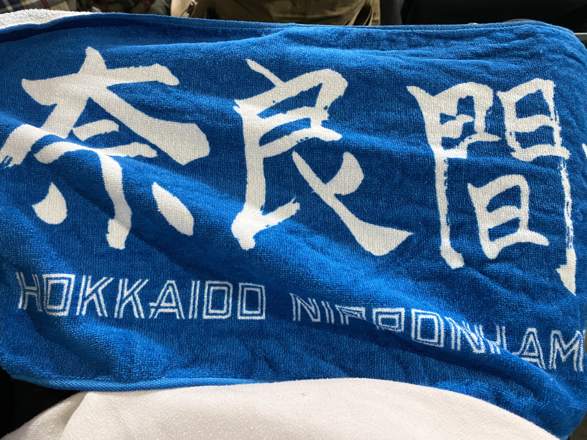
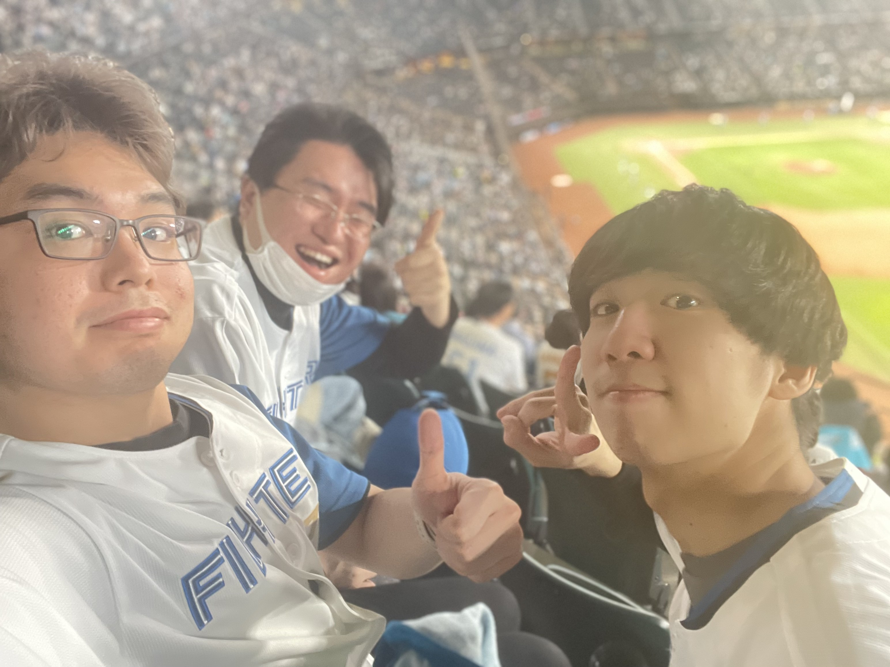

SPORTS
バドミントン
学生時代はバドミントン部に所属。
小学4年生の時に始め、中・高・大と気づけば10年以上も続けていました。
とはいえ大きなケガはなかったが大きな活躍もない、平凡な戦績です。（写真も残ってませんでした）
札幌に引っ越してからは、やる場所も相手も道具もないため少し遠ざかっています。
野球
こちらは未経験ですが、見るのは大好き。
小学5年生の時に札幌ドームに野球観戦に行って以降、14年来の日ハムファンです。
2023年はエスコンフィールドに足を運ぶこと8度。5勝3敗と観戦試合勝ち越しを達成できましたが、来年はもっともっと勝ちゲームを見たいものです。
大の日ハムファンですが、特に応援している選手は奈良間大己選手、細川凌平選手、畔柳亨丞選手です。
奈良間選手、細川選手は今シーズン一軍でも大きく活躍の場面を見ることができ、感激の一言しかありません。
畔柳選手を一軍の試合で見ることは適いませんでしたが、3選手とも、来年はさらなる飛躍を期待しております。
写真
- 
- 